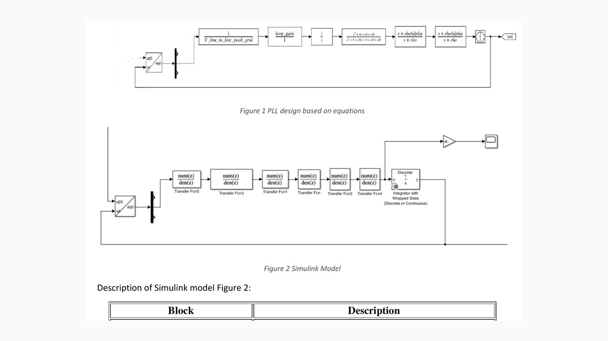
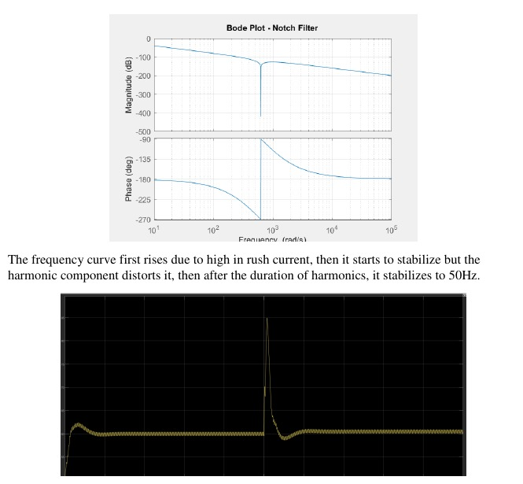
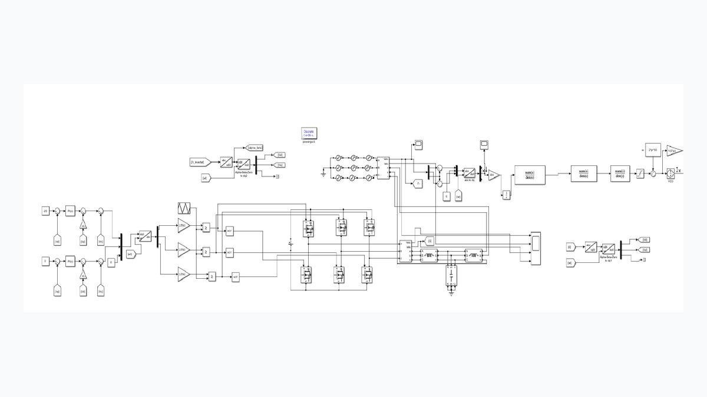
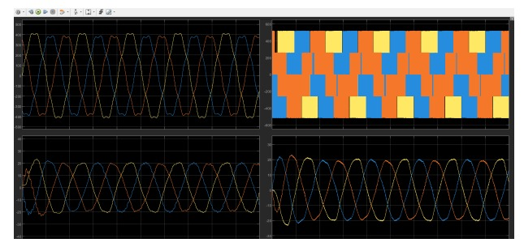
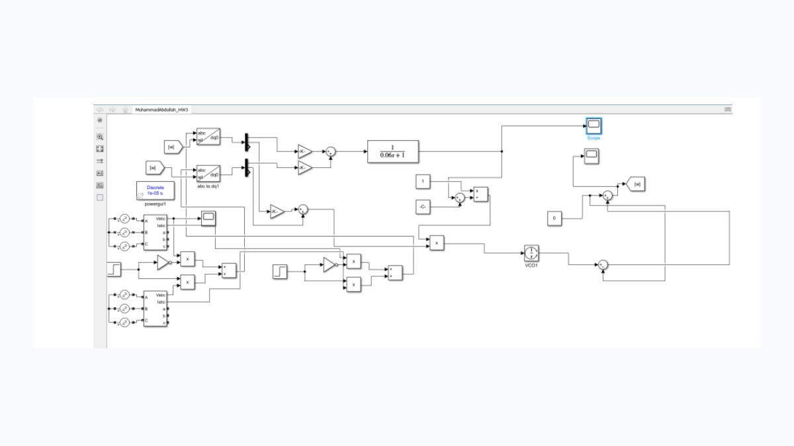
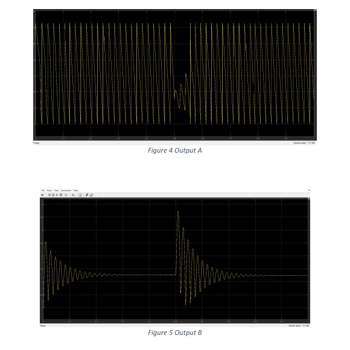

Optimization for modern grids
Multi-period OPF, security-constrained operation, storage integration, and practical modeling of renewable-rich systems.
Energy Systems Researcher
I am a Master’s student in Energy Systems at the Skolkovo Institute of Science and Technology in Moscow, Russia.
My research interests are in smart grids, power system optimization, renewable energy integration, power electronics, control, and AI/ML applications for modern energy systems. I am interested in developing methods that support secure, reliable, and resilient operation of future power systems with high shares of renewable generation and intelligent energy infrastructure.
I received my Bachelor of Science in Electrical Engineering from COMSATS University Islamabad, Lahore Campus, where my academic work focused on power electronics, control systems, IoT, signal processing, communication systems, and digital system design. I am currently looking for research opportunities and PhD positions in power systems, smart grids, energy optimization, and AI for energy systems.
Multi-period OPF, security-constrained operation, storage integration, and practical modeling of renewable-rich systems.
Graph neural networks, AI-assisted contingency detection, and data-driven models for power system operation.
Grid-forming inverter control, adaptive droop control, relay protection testing, and MATLAB/Simulink-based design.
Academic background
Skolkovo Institute of Science and Technology, Moscow, Russia
Current CGPA: 3.7/4.0. Research focus includes smart grids, power system optimization, power electronics, dynamics and stability, renewable energy integration, optimal control, and cybersecurity in smart grids.
Master’s thesis: A Game Theory-Based Optimization Framework for Cybersecurity in Power Systems under False Data Injection Attacks.
COMSATS University Islamabad, Lahore Campus, Pakistan
Academic focus included power electronics, IoT, signal processing, complex electrical circuit analysis, control systems, communication systems, and digital system design.
Research Seminars in Smart Grids, Skoltech, Nov 2024 – May 2025.
SUMMA 2025, 7th International Conference on Control Systems, Mathematical Modeling, Automation and Energy Efficiency, Lipetsk, Russia.
Skoltech Merit Scholarship, 2024 – Present.
Excellence Award for Outstanding Industrial Immersion Project, Skoltech, Oct 2025.
Academic and professional work
Tekvel, Moscow, Russia · Hybrid
Telerelations, Lahore, Pakistan
Technical toolkit
Research, simulation, and design

Designed and tested a PLL model in MATLAB/Simulink under negative-sequence voltage and harmonic distortion. The model used notch filtering, lead compensation, and time-domain validation to improve synchronization behavior.
The PLL output response and Bode analysis show how the filter and compensator reduce harmonic effects and help the frequency response settle after distortion.


Built a three-phase grid-following inverter simulation with PLL synchronization, dq current control, PWM switching, and LCL filtering to study grid-connected converter behavior.
The simulated waveforms show stable grid-side and inverter-side voltage/current behavior after filtering and current control, with the LCL interface reducing switching distortion.


Designed a dq-frame flux observer in Simulink to estimate stator flux magnitude and electrical angle, including reciprocal normalization and low-flux stability handling.
The output plots show the estimated flux-related response and angle behavior, including transient behavior during a frequency change and recovery to a stable response.

My master’s thesis develops an optimization framework for studying cybersecurity risks in power systems under false data injection attacks. The work focuses on how manipulated measurements can affect secure grid operation and how optimization can help identify critical buses, vulnerable operating points, and effective defense strategies.
Developed a multi-period OPF model with renewable generation, storage constraints, ramping limits, and unit commitment constraints. Implemented the framework in Pyomo/IPOPT and tested it on IEEE systems.
Built a graph neural network surrogate model for AC optimal power flow on the IEEE 9-bus system using PyTorch Geometric. Generated OPF datasets under varying load conditions and evaluated prediction accuracy.
Designed a contingency-sensitive control strategy to adapt grid-forming inverter inertia and damping for improved transient stability. The method was validated on the IEEE 9-bus system using RTDS NovaCor.
Developed an adaptive droop control framework for primary frequency regulation under changing operating conditions, integrating optimization, eigenvalue-based stability constraints, and AI-based event detection.
Developed relay protection test plans and executed fault simulations to evaluate protection performance, identify vulnerabilities, and support safer network operation.
Designed an IoT-based smart energy meter with real-time data acquisition, cloud transmission, and a web dashboard for energy monitoring.
Papers and manuscripts
Developed an AC-OPF-based optimization framework for cyber-physical attack analysis in power systems.
Accepted for presentation/publication at the 7th International Conference on Control Systems, Mathematical Modeling, Automation and Energy Efficiency, Lipetsk, Russia. Available on IEEE Xplore.
Developed from research on adaptive droop control, optimization-based stability constraints, and AI-assisted contingency detection for frequency regulation.
CV and contact
My CV summarizes my research experience in smart grids, OPF, AI/ML, relay protection, inverter control, cybersecurity, and energy system optimization.
Open CV